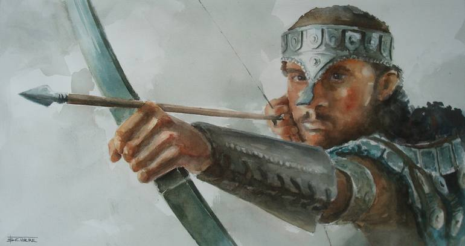
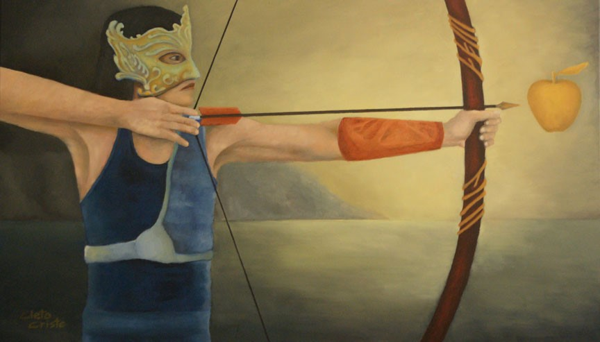

History of Archery
- The earliest evidence of archery dates to the late Paleolithic period, around 10,000 BC, when the Egyptian and
neighbouring Nubian cultures used bows and arrows archery for the purposes of hunting and warfare.
- In China, archery dates back to the Shang dynasty (1766-1027 BC)
- Ever wondered how archery got its name? According to World Archery, the word “archery” comes from the Latin
word “arcus,” which means “bow.”


- The oldest known evidence of the bow and arrow, or archery artifacts, are small stone arrow points that were
found in Sibudu Cave, KwaZulu-Natal, South Africa. They are a stunning 64,000 years old.
- The oldest recorded official archery event is a papingo shoot. This is an archery game in which the archers
shoot at a fake bird at various heights instead of at a target based on the ground. It was created by the
Ancient Society of Kilwinning Archers in 1483 and is still practiced today.
- Though bows have been around for thousands of years, made with natural materials and with sheer strength and
ingenuity long before you could buy one in a store, compound bows didn’t come around until 1966, created by
Holless Wilbur Allen.